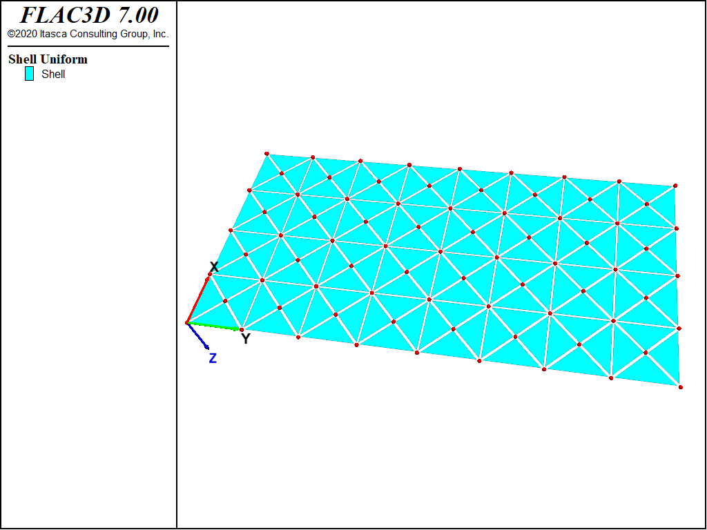
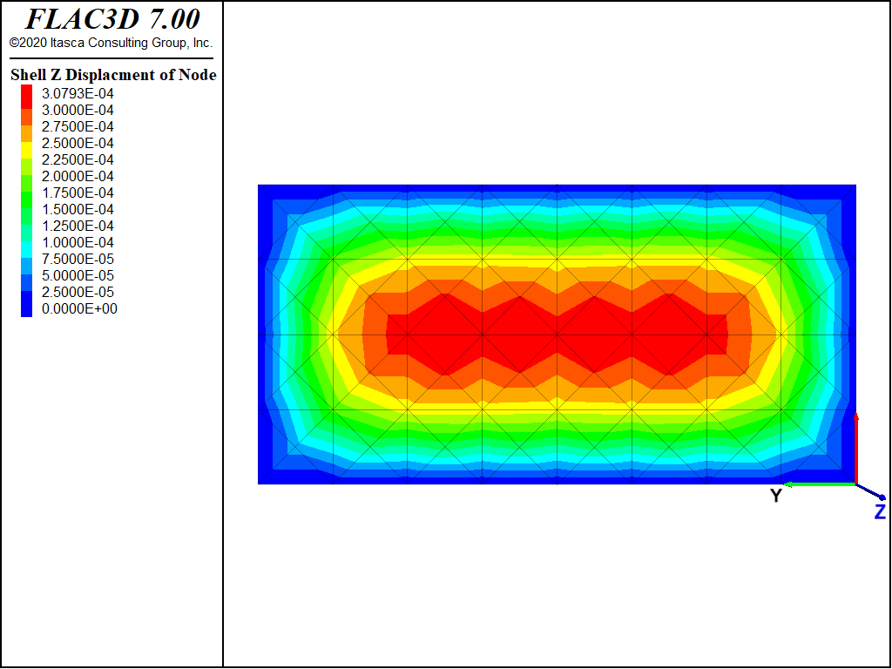
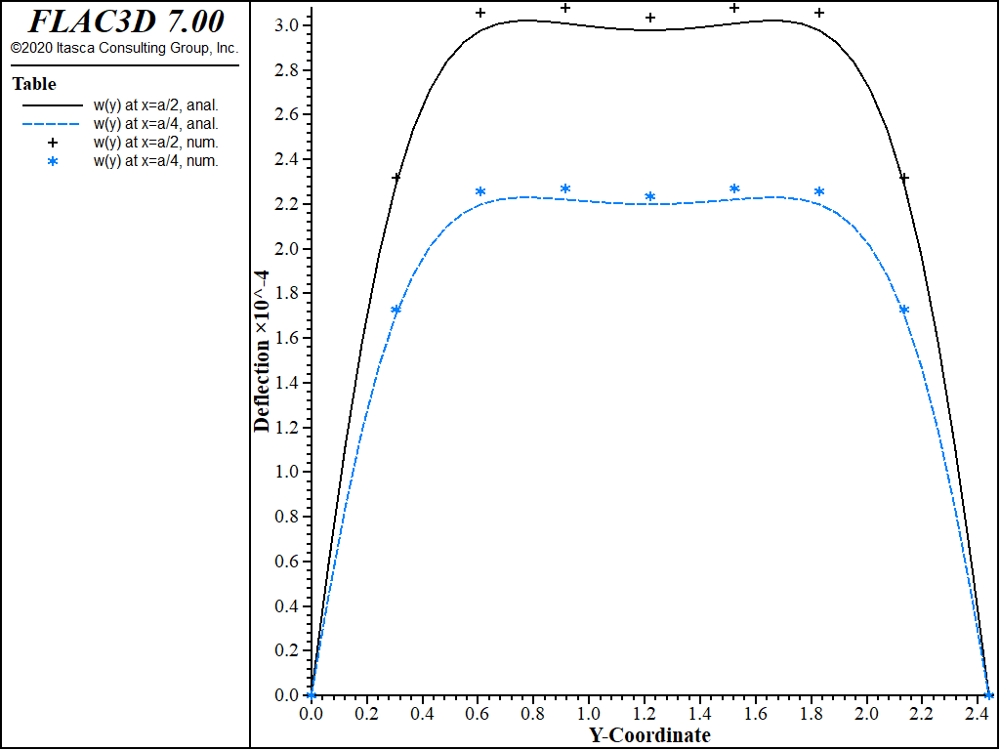
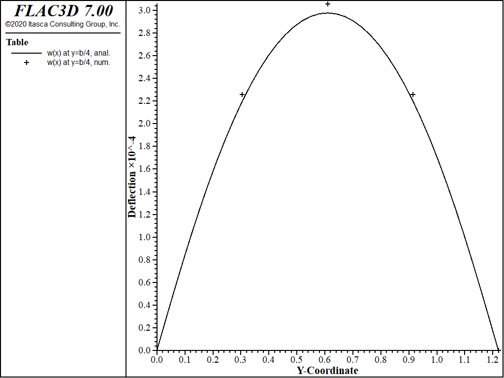

承受横向与直接联合荷载的简支各向同性矩形板
问题描述
注意
要在 FLAC3D 中查看该项目，请使用菜单命令 。选择 “VerificationProblems/ SimplySupportedIsotropicPlate” 并选中 “SimplySupportedIsotropicPlate.f3prj” 载入。所用 主数据文件（main data files） 示于本例末尾。其余数据文件可在该项目中找到。
对边长 \(a\) 与 \(b\)、承受均布横向荷载 \(p_0\) 与均布拉力 \(N\) 的简支矩形各向同性板，确定其挠度面。该板承受横向与面内联合力系。横向荷载由弯曲作用抵抗，面内荷载由膜作用抵抗。问题条件示于 图 （Figure）Figure #iplate-problem。
闭式解
解析解由 Ugural（1981，第 155-156 页）给出。该解把板的小变形理论（即假定中面挠度相对板厚很小）推广到计入联合荷载的同时作用，使中面在联合加载后产生应变。

挠度由下式给出
其中 \(D = {t^3 \over 12} \biggl({E \over {1 - \nu^2}}\biggr)\) 为抗弯刚度，\(t\) 为板厚，\(E\) 为杨氏模量，\(\nu\) 为泊松比。拉（压）力的存在会减小（增大）板挠度。
一块 4 × 8 的 3/4 英寸胶合板具有以下特性
记板中心挠度与 \(x = a\) 处沿边缘的 \(x\) 位移分别为 \((\Delta_z)_{\rm mid}\) 与 \(\Delta_x\)。本问题中 \(\Delta_x\) 沿边缘均匀。对 \(p_0 = 1.0 \ {\rm kPa}\) 的荷载：
所给拉力使中心挠度减小一个数量级。
FLAC3D Model
4 × 8 网格的 FLAC3D 模型含 128 个壳单元，如 图 2（Figure 2） 所示。为清晰起见对整个板建模，尽管可用四分之一对称以减小模型规模。四条边的 \(z\) 速度都固定为零以模拟简支，\(x\) = 0 处的边 \(x\) 速度固定为零以模拟滚轴边界条件。横向荷载用 structure shell apply 命令施加，膜荷载沿 \(x = a\) 处的边用 结构节点施加力边（structure node apply force-edge） 命令施加。采用交叉对角网格模式以确保响应对称，并采用 DKT-CSTH 杂交壳有限单元以抵抗膜与弯曲的联合作用。为抑制沿边缘的寄生 \(z\) 转动被激活，把其 \(z\) 转动节点速度固定为零。若使用 DKT-CST 单元则无需该约束。为模拟拉伸膜减小板挠度这一耦合，FLAC3D 在大应变模式下运行。
沿 \(y = b/2\)、\(x = a/2\) 与 \(x = a/4\) 三条线比较理论解与数值解。理论值取无穷级数的前 10 项（\(m <= 21\) 与 \(n <= 21\)）。挠度的数值取自各条线上节点。


图 2：联合加载板问题的 FLAC3D 模型。
结果
运行 \(N = 6.0 \times 10^5 \ {\rm N/m}\) 情形以产生
可与 上文（above） 的理论结果比较。中心挠度与理论值相差在 0.8% 以内，如 图 3（Figure 3） 所示，并在 图 4（Figure 4） 与 图 5（Figure 5） 中沿三条线与理论解比较。FLAC3D 结果与理论解吻合良好。这些结果表明，通过在大应变模式下运行 FLAC3D 可正确模拟几何非线性应力刚化效应。


图 3：板挠度等值线（联合加载）。


图 4：板沿 \(x = a/2\) 与 \(x = a/4\) 线的挠度（联合加载）。


图 5：板沿 \(y = b/2\) 线的挠度（联合加载）。
参考文献
Ugural, A. C. Stresses in Plates and Shells. New York: McGraw-Hill Publishing Company Inc. (1981).
数据文件
SimplySupportedIsotropicPlate.dat
; FLAC3D 验证问题
; 侧向与直接荷载共同作用下的各向同性矩形板
model new
[t = 'Isotropic rectangular plate under combined lateral and direct loads']
model title [t]
; 创建单元并赋予参数
struct shell create by-quadrilateral (0,0,0) (1.22,0,0) ...
(1.22,2.44,0) (0,2.44,0) ...
size (4,8) ...
element-type=dkt-csth cross-diagonal
struct shell property isotropic (10e9,0) thick 19e-3
; 边界采用简支条件
struct node fix velocity-z rotation-z ...
range union position-x 0.0 position-x 1.22 position-y 0.0 position-y 2.44
; 沿 x=0 设置滚动支承，沿 x=1.2 施加力
struct node fix velocity-x range position-x 0.0
struct node apply force-edge (6e5,0,0) range position-x 1.22
; 施加压力
struct shell apply 1e3
; 启用大应变，以建立弯曲与膜变形之间的耦合
model large-strain on
; 求解模型
model solve ratio-local=1e-5
; 保存模型
model save 'isotropic4x8'
| 这些内容对您有帮助吗？… | FLAC3D © 2019, Itasca | 原文更新于 2020 年 10 月 8 日 |